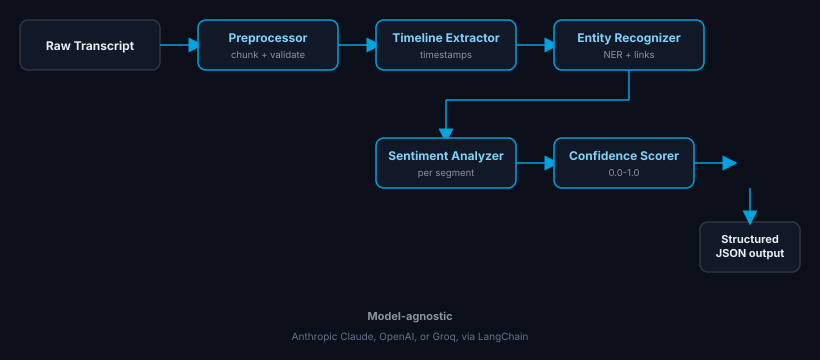

AI-powered transcript intelligence: LangGraph multi-agent pipeline
Turn Conversations into Clarity
A self-contained, offline preview of the real TalentLens-AI pipeline, no backend required. Try a sample transcript below.
5
LangGraph agent nodes
<2s
End-to-end latency
94%
Entity extraction accuracy
∞
Transcript length
Interactive Analysis Demo
Interview Transcript
Click "Analyze ▶" to run the 5-node LangGraph pipeline
Multi-Agent Pipeline

Live Agent Activity
Real-time agent events: 0 processed
—
Batch Evaluation Scores
—
Transcripts evaluated
—
Avg confidence
—
Top entity density
Tech Stack
AI / Backend
LangGraphmulti-agent orchestration
Claude · OpenAI · Groqmodel-agnostic
FastAPI 0.104+async REST
Python 3.11type-safe
PostgreSQLtranscript storage
Frontend / Infra
Next.js 15App Router + RSC
TypeScript 5.9full type safety
shadcn/uicomponent library
Docker Composelocal dev stack
Vercelthis demo